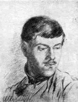

Հարո Ստեփանյան
 Հարո Ստեփանյանը` տաղանդավոր և ինքնատիպ կոմպոզիտորներից մեկը, մեծ ավանդ ներդրեց հայ երաժշտական մշակույթի զարգացման գործում:
Լինելով հինգ օպերայի, երեք սիմֆոնիայի, բազմաթիվ երգերի, ռոմանսների, կամերային-գործիքային ստեղծագործությունների հեղինակ՝ նա նպաստեց հայ երաժշտության գաղափարական բովանդակության, ժանրերի ու ձևերի ընդլայնմանը, ելևէջային ոլորտի և արտահայտչամիջոցների հարստացմանը: Հայ կոմպոզիտորներից աոաջինն իր ստեղծագործության մեջ դիմեց ժամանակակից իրականությանը, նոր դարաշրջանի կերպարների մարմնավորմանը:
Հարո Ստեփանյանը ծնվել է ժամանակի մշակութային կյանքին սերտորեն կապված ընտանիքում, որից տարբեր ժամանակներում սերել են հետաքրքիր և բազմակողմանիորեն օժտված մարդիկ:
Ստեփանյանների ընտանիքն ապրում էր ոչ մեծ գավառական քաղաքում՝ Ելիզավետպոլում (Գանձակ): Այդ գեղատեսիլ, այգիների մեջ թաղված քաղաքը տվել է մշակույթի ականավոր գործիչներ՝ 12-րդ դարի անվանի հայ պատմաբան Կիրակոս Գանձակեցուն, նույն դարի առակագիր Վարդան Այգեկցուն, առակագիր և առաջին հայկական Օրենսգրքի հեղինակ Մխիթար Գոշին և այլոց:
1897 թվականի ապրիլի 27-ին ծնվեց ապագա կոմպոզիտոր Հարո Ստեփանյանը: Նրա հայրը՝ Լևոնը, գյուղատնտես էր, հայտնի գինեգործ: Ընտանիքում իշխող սերը գրականության և արվեստի նկատմամբ նախապայման հանդիսացավ Հարոյին՝ երաժշտությանը, իսկ նրա մեծ եղբորը՝ Սուրենին, քանդակագործությանը նվիրվելու: Պատանեկան տարիներին ստացած երաժշտական տպավորություններից ապագա կոմպոզիտորի համար առաջնային նշանակություն ունեցավ ժողովրդական երաժշտությունը: Հետագայում նա կգրի. «Ես սիրեցի հայ ժողովրդական երաժշտությունն այնպես, ինչպես կարելի է սիրել մորը, ընկերոջը, սիրած աղջկան: Նրանում ես լսում էի հայրենի երկրի սրտի ու հոգու ձայնը, պատմական փոթորիկների, իմ ժողովրդի տրտմության, ուրախության ու երազանքների արձագանքները: Հենց այդպիսի վերաբերմունք է պահպանվել իմ ողջ կյանքի ընթացքում նրա, որպես կենդանի էակի նկատմամբ»:
Ունենալով հումորի մեծ զգացում՝ նա հետաքրքրությամբ ունկնդրում էր ժողովրդական երևակայողներին՝ «սուտլիկներին» (տեղի բանահյուսության տեսակ), իսկ հետո, բավական ուշ, հիշողությամբ գրի առնելով, հրապարակեց դրանցից մեկի՝ Ղարղադիլի պատմություններն ու ցնորամիտ հորինվածքները:
Ստեփանյանը տասնյոթ տարեկան էր, երբ սկսվեց աոաջին համաշխարհային պատերազմը: Գիմնազիան ավարտելուց հետո նա կամավոր զինվորագրվեց և մասնակցեց տաճկական ճակատի մարտերին:
1919 թվականից Հարոն մեկ տարի սովորեց Թիֆլիսի կոնսերվատորիայում (դաշնամուր՝ Կ.Ադուրալովա, երաժշտության տեսություն և ստեղծագործություն՝ Ա.Տեր-Ղևոնդյան), այստեղ ծանոթացավ Ռ.Մելիքյանի հետ, որի ստեղծագործությունը հսկայական տպավորություն գործեց նրա վրա:
1920 թվականից Ստեփանյանն աշխատեց Հայաստանում, որպես ուսուցիչ, նախ՝ Սանահինում, ապա՝ Ալեքսանդրապոլում: Այդ տարիների տպավորություններն ու մտորումները ծնունդ տվեցին նրա հետագա գեղարվեստական կերպարներից շատերին:
1923 թվականին նա Մոսկվայում ընդունվեց Գնեսինների անվան երաժշտական ուսումնարանը (Մ.Գնեսինի ստեղծագործական դասարան): Իր հիշողություններում Գնեսինը գրում է. «Հիացմունքի էին արժանի Ստեփանյանի նուրբ ճաշակը, բանաստեղծականությունը և ոճական առկայծումները: Իսկական հաճույք էր օգնել նրան հղկելու նուրբ և տաղանդավոր վոկալ, դաշնամուրային ստեղծագործությունները»: Այդ շրջանի ստեղծագործություններից աչքի են ընկնում չորս երգերը, որոնք դասատուի խորհրդով հրատարակվել են իբրև ստեղծ. թիվ 1: Դրանք են՝ գարնանային պայծառ տրամադրությամբ տոգորված «Մայիսը», հոգեպարար, նուրբ «Օրորոցայինը», առույգ, հեզաճկուն «Լորիկը» և հորովելներին մոտ «Հնձի երգը»:
1926 թվականին Ստեփանյանը փոխադրվեց Լենինգրադի կոնսերվատորիայի Վ.Շչերբակովի ստեղծագործական դասարանը, աշակերտելով նաև Յու.Տյուլինին, Պ.Ռյազանովին, Ք.Քուշնարյանին:
Լենինգրադյան տարիները (1926-1930) մեծ նշանակություն ունեցան կոմպոզիտորի ստեղծագործական դիմանկարի ձևավորման, կոմպոզիտորական վարպետության, տեսական հաստատուն գիտելիքների ձեռքբերման գործում: Փորձված մանկավարժները, կոնսերվատորիայի ստեղծագործական մթնոլորտը նպաստեցին բարձր ճաշակի, ստեղծագործական պահանջկոտության, արդիականության նկատմամբ հետաքրքրության զարգացմանը:
1927-1929 թվականների ամռանը Ստեփանյանը մասնակցեց Ք.Քուշնարյանի կազմակերպած ժողովրդական երաժշտության հավաքման արշավին: Հայաստանի տարբեր շրջաններում, հատկապես Շիրակում, նրանք գրի առան 350-ից ավելի հայկական և քրդական մեղեդիներ: «Այդ ինքնօրինակ արշավն օգնեց ինձ ավելի խոր ճանաչելու իմ հայրենիքի անկրկնելի գեղեցկությունը,- ասում էր Ստեփանյանը: -Հետագայի իմ ստեղծագործություններից շատերը ծնվել են այն օրերին ստացած տպավորությունների ազդեցության տակ, մասնավորապես իմ «Հեյ, Արագած» երգը, որ գրված է Շիրակի «Սահարիի» տիպի ոճով, երգեր, որոնք փառաբանում են առավոտը, այգը, արևը»:
Լենինգրադում ուսանելու տարիներին գրվեցին գործիքային ստեծագործություններ, ինչպես նաև «Չորս երգ» (ստեղծ. թիվ 2) տետրը՝ հիմնված ժողովրդական բանահյուսության վրա: Կոմպոզիտորի առաջին իսկ երկերը հավաստիացնում են, որ հայ երաժշտություն է ոտք դրել մի նոր տաղանդավոր արվեստագետ: 1930 թվականին մշտական բնակություն հաստատելով Երևանամ՝ կոմպոզիտորը նվիրվում է ստեղծագործելուն, գրում է երգեր, ռոմանսներ, կամերային և սիմֆոնիկ ստեղծագործություններ, նպատակամետ աշխատում օպերաների ուղղությամբ, զուգահեռաբար ղեկավարում է կոնսերվատորիայի ստեղծագործական դասարանը (1930-1934), գլխավորում կոմպոզիտորների միությունը (1938-1947): 1938-ին ընտրվում է Հայաստանի Գերագույն խորհրդի պատգամավոր:
30-ական թվականներին լիովին ձևավորվեց կոմպոզիտորի գեղարվեստական դիմանկարը: Նրան բնութագրական են ամենատարբեր մտահղացումներ. անցյալն ու ներկան, քնարերգությունն ու էպոսը, մտերմիկը, խոր հոգեբանականն ու դարակազմիկ իրադարձությունները: Ավելի հղկվեց կոմպոզիտորի վարպետությունը, խորացավ ժողովրդական երաժշտության բնույթի և առանձնահատկությունների մեջ ներթափանցելու կարողությունը, ավելի համառ դարձան երաժշտական լեզվի ազգային առանձնահատկությունների որոնումները:
Պատերազմի տարիներին ժամանակի թելադրանքով Ստեփանյանը ստեղծեց բարձր հայրենասիրությամբ տոգորված երգեր, որոնք գրված են այն տարիների մասսայական երգի ոճով, բայց և կրում են կոմպոզիտորի անհատական գրելաձևի կնիքը:
Հայրենական մեծ պատերազմի թեմատիկայի հետ անմիջականորեն կապված ստեղծագործությունների կողքին Հ.Ստեփանյանը կերտում է մի շարք հետաքրքիր երկեր հայ ժողովրդի հերոսական անցյալի մասին: Կոմպոզիտորի մտահղացմամբ ժամանակակիցների հայրենասիրությունը, մարտական սխրանքները կապվում են նախնիների ազատագրական պայքարի դարավոր՝ ավանդույթների հետ՝ դառնալով յուրատեսակ «դարաշրջանների փոխկանչ»:
Ավարտվեց պատերազմը: Ստեփանյանը շարունակում է ստեղծագործել նոր մղումով: Մեծ հաջողություն են ունենում նրա հեղինակային համերգները Երևանում, Մոսկվայում և Լենինգրադում:
1966 թիվ: Հարո Ստեփանյանը, ինչպես միշտ, լի է նոր ստեղծագործական մտահղացումներով: Հունվարի 2-ին ավարտեց Սիամանթոյի բանաստեղծություններով երգաշարի երկու ռոմանսները («Երգ մը թռավ իմ սրտեն», «Եղերերգություն»), իսկ հունվարի 9-ին ընդհատվեց երևելի արվեստագետի և հիանալի մարդու կյանքը: